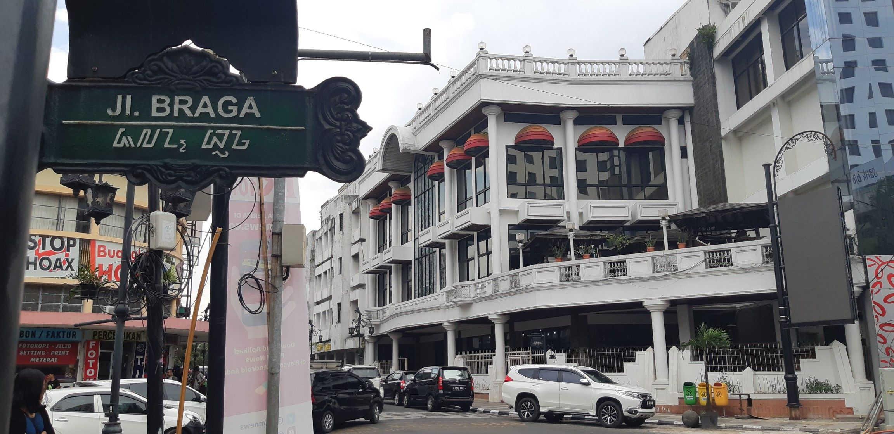
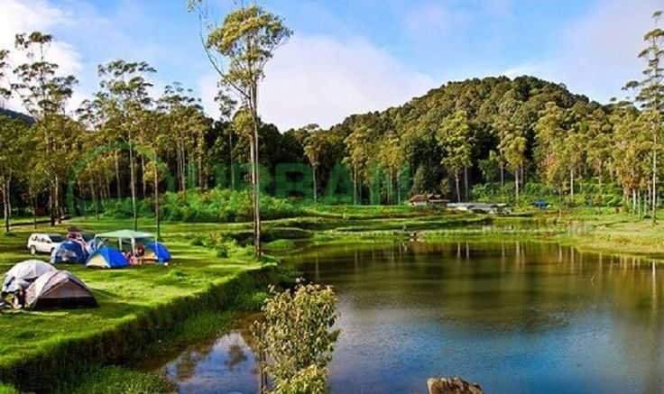
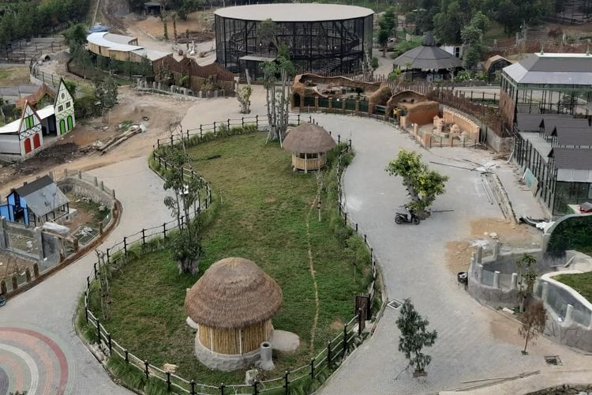

Bandung adalah kota yang selalu ngangenin, bahkan bagi yang udah sering liburan ke Bandung sekalipun. Maklum, selain kulinernya yang lezat dan variatif banget, Bandung juga penuh dengan objek wisata yang bikin kota ini jadi salah satu magnet wisata utama di Pulau Jawa.
Enggak heran juga, tiap akhir pekan, ada ribuan atau bahkan puluhan ribu masyarakat Jakarta yang memilih Kota Bandung sebagai destinasi liburan pendek mereka!
Apa aja sih sebenernya tempat wisata di Bnadung yang bikin kota ini layak untuk dikunjungi dan dieksplor lagi?1.Braga
Siapa sih yang enggak tahu Braga?
Braga adalah ikon kota Bandung, dan enggak mungkin liburan ke Bandung kalau enggak menyempatkan diri sekadar lewat atau bahkan singgah untuk menikmati hypenya Braga. Dari restoran, bar, sampai coffee shop kekinian yang berdiri di dalam gedung tua yang terjaga, semuanya ada di Braga.
Kamu juga bisa menemukan penjual-penjual lukisan di pinggir jalan, siap memberikanmu kenang-kenangan dari Bandung untuk dipajang di rumah.
2. Kampung Cai Ranca Upas
Kampung Cai Ranca Upas adalah salah satu tempat wisata paling menarik di Ciwidey! Selain punya area perkemahan yang cantik, Kampung Cai Ranca Upas juga punya yang menyenangkan untuk dikunjungi. Selain itu juga ada berbagai permainan outbound yang bisa kamu coba di sana bersama keluarga.
Eh, di sini ada kolam pemandian air panas alaminya juga, lho!
3. Lembang Park & Zoo
Lembang memang enggak pernah kehabisan tempat wisata yang seru, dan salah satu tempat wisata di Lembang Bandung yang terbaru adalah Lembang Park & Zoo!
Terletak di Jl. Kolonel Masturi No. 171, Sukajaya, Lembang, Kabupaten Bandung Barat, Jawa Barat, Lembang Park & Zoo enggak hanya merupakan kebun binatang di mana para pengunjung bisa bertemu dan mengenal berbagai satwa, tapi juga menjadi tempat wisata rekreasi yang menyenangkan.
Salah satu yang paling keren di sini adalah Bird Aviary-nya yang besar banget dan keren, dengan banyak burung cantik di dalamnya! Selain itu, kamu juga bisa makan siang bersama singa atau ngemil bareng kucing-kucing lucu di Neko Cat Cafe.